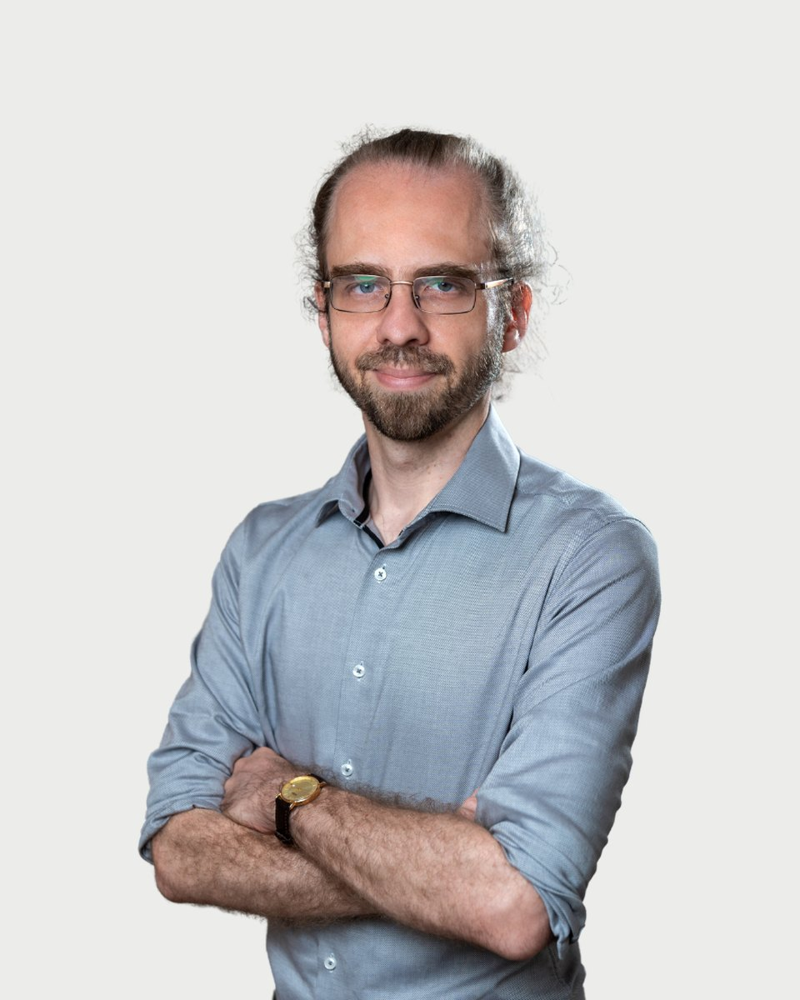

Regiszter 31 · Szakpszichológus-jelölt
Szatmári Zsolt
Amiben segítek
Szatmári Zsolt saját megfogalmazásában. Ha a listában nem találja a saját helyzetét, az első beszélgetésen ezt is megbeszélik.
- Ha jelenlegi élethelyzetében elakadt, nem látja a kiutat, de változtatni szeretne
- Ha munkahelyi vagy magánéleti stresszel, vagy hirtelen megváltozó élethelyzettel szembesül
- Ha párkapcsolatában problémák, nehézségek merülnek fel, amik már-már megoldhatatlannak tűnnek
- Ha fontos döntés előtt áll, melynek ugyanakkor tart a lehetséges következményeitől
- Ha fontos személyt vesztett el, pl. konfliktus vagy haláleset miatt
- Ha baleset vagy testi betegség miatt megváltozott az élete
- Ha konfliktuskezelési nehézségei vannak
- Ha úgy érzi, nem igazán értik meg az Ön számára fontos emberek
- Ha magányos
- Ha önbizalomhiánytól szenved
- Ha önmegvalósítási nehézségei, esetleg megvalósulatlan művészi ambíciói vannak, amik az élet forgatagában valahogy mindig háttérbe szorulnak
- Ha életvezetési nehézségei vannak, vagy úgy érzi, kicsúszik az idő a kezei közül
Bemutatkozás
Szatmári Zsolt saját szavaival. Egy alkalom díja 18-25 ezer forint. A díjakról
Mélyen hiszek abban, hogy az élet megpróbáltatásaival nem egyedül kell szembenéznünk.
Mint megannyi ékkő tükröződünk egymásban, ezért ha eléggé figyelünk a másikra, tényleg meg akarjuk hallani amit mond, ez sikerülni is fog. Ezáltal, közös erővel, pozitív irányba változhat életünk, túllendülhetünk a nehézségeinken, és talán mi magunk is többek, jobbak, igazán önmagunk lehetünk.
Hiszek a mindannyiunkban megbúvó, legkülönfélébb helyzetekben jelen levő növekedési lehetőségekben. Így olykor magukkal a nehézségekkel, fájdalmas külső és belső eseményekkel, veszteségekkel való szembenézés esélyt is jelenthet a bennük rejlő, korábban kiaknázatlan létlehetőségek kibontakoztatására. Így jelentést találhatunk a körülöttünk és bennünk zajló történésekben, ezáltal, egy-egy sötétebb alagúton keresztüljutva, teljesebb, boldogabb, szeretettelibb életet élhetünk.
Hiszem azt is, hogy pszichológusként felelősségem, hogy szakmai fejlődésemen túlmenően folyamatosan dolgozzak saját magamon is, megismerjem saját lelkem működését, hiszen csak így tudok másoknak hitelesen segíteni. Ennek megfelelően én magam is rendszeresen önismereti terápiára járok.
És nem utolsó sorban abban hiszek, hogy minden emberi lénynek, így Önnek is megvan a joga a boldogságra. Ez az út, amelyen szeretném kísérni, és hozzásegíteni ahhoz, hogy a legteljesebb és legsajátabb értelemben megélhesse azt, aki Ön igazán lenni hivatott!
Az ember lényegi létmódja szerint sohasem hasonlítható össze tárggyal, sokkal inkább fénnyel, amely megvilágítja a lét dolgait. Vagy egy melódiával, amely a világ dolgaival összecseng.", Medard Boss
Képzés és szakmai út
16 tétel. A képzések és a szupervízió az akkreditált szakképzőhely rendjében folynak. Mit jelent ez Önnek
Iskolai végzettség
Módszertani képzések
Egyesületi tagságok
Önismeret, sajátélmény
Tanítómesterek
- Dr. Unger Klárakiképző jungi analitikus pszichoterapeuta
- Dr. Sarungi Emőkekiképző csoportanalitikus pszichoterapeuta, egyetemi oktató
- Dr. Terenyi Zoltánkiképző csoportanalitikus pszichoterapeuta
- Dr. Krékits Józsefkiképző daseinanalitikus pszichoterapeuta, egyetemi oktató
- Dr. Papp-Zipernovszky Orsolyaegészségpszichológiai szakpszichológus, egyetemi oktató
- Dr. Sallay Violaegészségpszichológiai szakpszichológus, egyetemi oktató
- Dr. Rafael Beatrixklinikai szakpszichológus, egyetemi oktató
- Rácz Zsuzsannaklinikai szakpszichológus
- Dancsó Angélaklinikai szakpszichológus
- Dr. Fábiánné Páger Annamentálhigiénés szakember
Rólam mondták
Kliensek visszajelzései, a hozzájárulásukkal, névtelenül.
Nagyon inspiráló számomra Zsolt hozzáállása az emberekhez és a pszichológiához. Leginkább az a befogadó kíváncsiság és őszinte megismerési vágy, mellyel a világot szemléli, és amely véleményem szerint elengedhetetlen a pszichológusi munkában.
Azért jó vele beszélgetni, mert egyrészt érzed, hogy tényleg figyel, másrészt finoman rámutat az ellentmondásokra, így vele beszélgetve nem tudtam a szokásos mellébeszéléseimmel élni. Így vált lehetővé, hogy igazán fontos dolgokra rájöjjek magammal, vagy épp a helyzetemmel kapcsolatban
Végtelenül lelkiismeretes, valóban szeretne segíteni. Emellett széles látókörű és olvasott, folyamatosan bővíti szaktudását.
Nagyon elfogadó, nem fog elítélni azért, mert elmeséled neki a szokatlan dolgaidat. Amikor mondott valami olyasmit, hogy érdekes, tőle elhittem, hogy nem csak úgy mondja, hanem valóban érdekli.
Regiszter 31
Időpont Szatmári Zsoltnál
Az ügyfélszolgálat hétköznap 9 és 15 óra között egyeztet. Ha bizonytalan, hogy Ön kihez tartozik, azt is megbeszélik, és ha kell, más kollégát javasolnak.